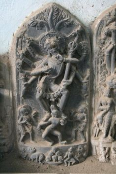

About Dakshin Dinajpur
Dakshin Dinajpur is another district in West Bengal, known for its unique cultural elements. The district is home to several folk art forms, including Baul music, which is a spiritual and mystic form of music deeply rooted in Bengali culture. The region also celebrates various festivals with enthusiasm, such as Durga Puja and Kali Puja, where intricate and artistic idols are created and worshipped. The cultural significance lies in the preservation of these traditional art forms and the vibrant celebration of festivals that bring communities together.

